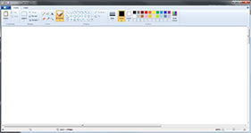
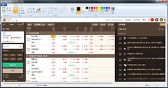

故障及疑難排解
繁體
- 無法正常的打開我們的網頁或網頁打開後被轉導到別的網站？
- 網頁無法正常打開或被轉導的原因常常是因為當地電訊公司的DNS被劫持，而 DNS劫持是指域名解析記錄控制權被擅改並惡意修改域名的原IP地址至指定IP地址，其結果就是對特定的網址不能訪問或所訪問的網址是假的，從而實現竊取資料或破壞原有正常服務的目的。我們建議用戶下載DNS修復軟件，該軟件將會自動幫您的電腦指向有效的DNS.
- 解決方法1: 下載DNS Fixed 軟件
- 解決方法2: 修改 DNS 地址
- 網頁排版錯位或不整齊
- 如何屏幕載圖



- 1. 按 ‘PrtScn’.
- 2. 打開‘畫圖’.
- 3. 貼畫面然後保存.